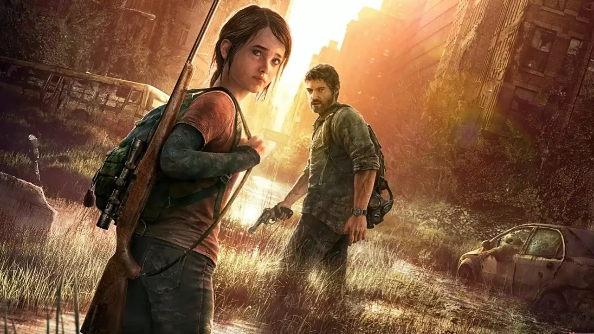
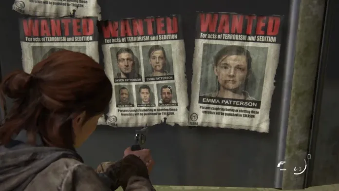

The Last of Us (conhecido também como TLoU) é uma franquia de jogos eletrônicos de ação-aventura e survival horror exclusiva da PlayStation, criada por Neil Druckmann. A franquia é situada em um mundo pós-apocalíptico, com seres humanos hostis e criaturas canibais infectadas por uma mutação do fungo cordyceps.
A franquia possui dois jogos principais, uma DLC, uma minissérie em quadrinhos, um teatro musical e uma série de televisão. É amplamente aclamada pela crítica e pelo público, com todos os títulos lançados tendo grande sucesso. O primeiro jogo foi elogiado pelo seu enredo, jogabilidade, exploração da condição humana e boa representação de personagens femininas. O título se tornou um dos jogos mais vendidos do PlayStation 3 e é considerado um dos melhores jogos de todos os tempos, tendo vencido mais de 200 prêmios de Jogo do Ano.
>O principal elemento do universo de The Last of Us é o fungo parasita cordyceps, que existe na vida real e geralmente parasita insetos, repondo seus tecidos e passando a controlar seus comportamentos. Na franquia, o cordyceps pode parasitar humanos, o que é considerado impossível na vida real. A história não explica em detalhes como a infecção do fungo avançou de insetos para humanos, apenas diz que houve uma “mutação” e que a infecção se espalhou rapidamente devido a plantações contaminadas. A chamada Infecção Cerebral do Cordyceps (ICC), começou a se espalhar, especificamente, nos Estados Unidos no final de setembro de 2013. Em alguns meses, aproximadamente 60% da humanidade havia sido morta ou infectada pelo fungo. O fungo cresce enquanto o hospedeiro ainda está vivo, com os hospedeiros passando por quatro estágios de infecção. O estágio um começa dois dias após a infecção, o hospedeiro é chamado de "Corredor"; ele perde sua função cerebral superior, e com ela, sua humanidade, tornando-os muito agressivos. São incapazes de raciocinar, andam em grupo e são extremamente rápidos. Dentro de duas semanas, o hospedeiro entra no estágio dois da infecção e se tornam os chamados "Perseguidores"; o fungo começa a piorar sua visão, resultado do crescimento progressivo de fungos na cabeça. Eles são ágeis como os "Corredores", o que os diferenciam é que eles se escondem em lugares fechados e escuros e esperam o momento certo para atacar. Após um ano de infecção, o hospedeiro entra no estágio três, que são chamados de "Estaladores"; nesse estágio, o crescimento do fungo já tomou completamente o rosto do hospedeiro, destruindo seus globos oculares e deixando-os cegos, resultando no desenvolvimento de uma grande percepção auditiva.
Após o surto da Infecção Cerebral do Cordyceps (ICC) acontecer nos Estados Unidos em setembro de 2013, a FEDRA (Agência Federal de Resposta a Desastres) assumiu o controle das Forças Armadas e declarou lei marcial, removendo os burocratas do poder. Para conter o fungo, a FEDRA fez com que os militares transferissem todos os humanos não infectados para grandes zonas de quarentena nas principais cidades do país, com o objetivo de protegê-los dos infectados. Os Estados Unidos sob a FEDRA tornaram-se um estado policial, exercendo poder absoluto sobre as zonas, o que levou à criação dos Vaga-Lumes, uma milícia dedicada a derrotar a FEDRA, restaurar o governo como era antes do surto e encontrar uma cura para a doença. Em certo momento, a FEDRA perdeu o controle de várias zonas de quarentena no país devido a infecção, escassez de alimentos, ataques dos Vaga-Lumes e revoltas locais por parte dos habitantes. A maioria das zonas foram simplesmente abandonadas pelos militares, em outros casos, algumas foram convertidas em bases por grupos de sobreviventes.